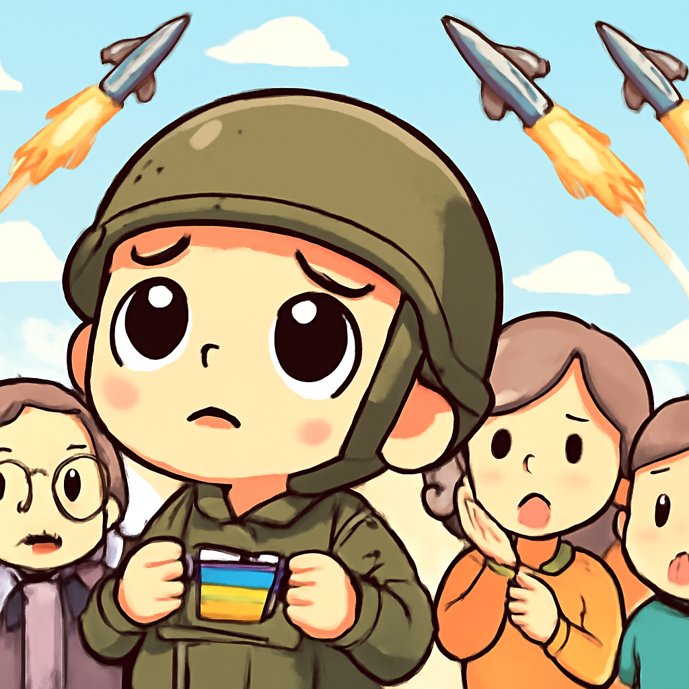
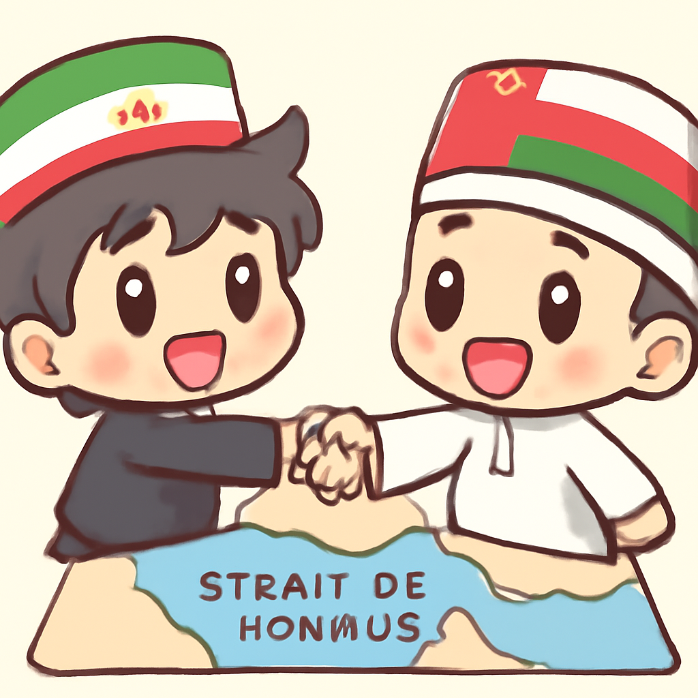
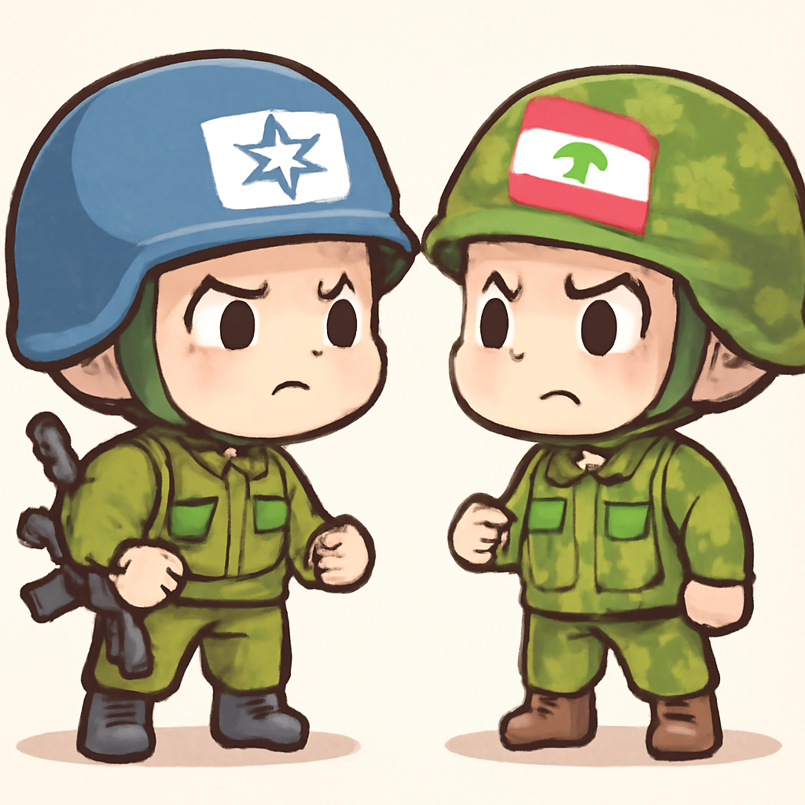
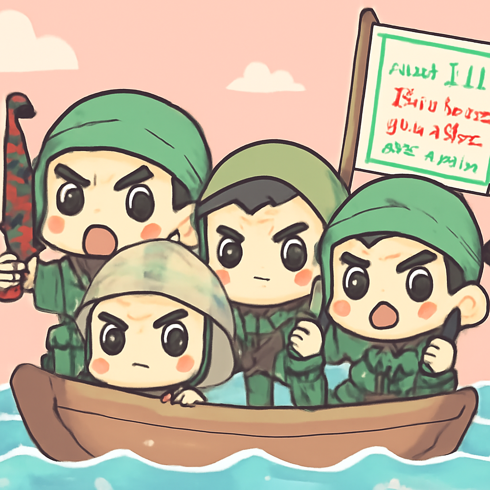

其一 · 烏克蘭基輔 · 烏克蘭警告攔截器短缺危機
烏克蘭呼籲增援攔截系統，避免更多傷亡

在烏克蘭基輔，隨著俄羅斯導彈攻擊頻繁，烏克蘭官員警告，攔截系統的短缺正讓民眾面臨生命危險。這不僅是軍事問題，還影響到平民安全，讓人擔心未來的局勢發展。希望國際社會能加速支援，否則烏克蘭的天空將繼續變得不安全。
🔗 原始新聞 ↗
2026-08-06 · 以古觀今，以笑抗愁
烏克蘭呼籲增援攔截系統，避免更多傷亡

在烏克蘭基輔，隨著俄羅斯導彈攻擊頻繁，烏克蘭官員警告，攔截系統的短缺正讓民眾面臨生命危險。這不僅是軍事問題，還影響到平民安全，讓人擔心未來的局勢發展。希望國際社會能加速支援，否則烏克蘭的天空將繼續變得不安全。
🔗 原始新聞 ↗
伊朗與阿曼在霍爾木茲海峽的航運協議即將達成

最近在伊朗，外交部發言人透露，伊朗與阿曼的航運協議已進入最後階段。這項協議將確保霍爾木茲海峽的航運安全，對全球油價及貿易影響深遠。畢竟，這條水道可是全球石油運輸的命脈，對各國經濟影響巨大。希望這個協議能順利推進，讓海上交通少點波折。
🔗 原始新聞 ↗
以色列空襲黎巴嫩，局勢再度升溫

在南黎巴嫩，由於以色列指控真主黨違反停火協議，最近進行了空襲，造成一人死亡。這一行動可能會影響正在進行的和平談判，讓本就緊張的局勢再度升級。希望雙方能冷靜下來，否則我們可能又要看到更多的衝突新聞了。
🔗 原始新聞 ↗
印度青年抗議運動，讓莫迪政府面臨挑戰
在印度，青年抗議運動席捲各地，成為近年來對莫迪政府最大的反對聲音。這場運動不僅表達了對政府政策的不滿，也顯示出年輕一代對未來的渴望和不安。這個運動讓政府感受到壓力，也讓我們看到年輕人的力量，未來的印度或許會更有希望。
🔗 原始新聞 ↗
胡塞武裝威脅擴大攻擊沙烏地阿拉伯油輪

最近在沙烏地阿拉伯，胡塞武裝聲稱將擴大對紅海的攻擊，並對沙烏地的油輪發動攻擊。這不僅對沙國的經濟造成威脅，也可能引發更廣泛的地區衝突。國際社會需密切關注，否則未來的油價又要飛漲了！
🔗 原始新聞 ↗